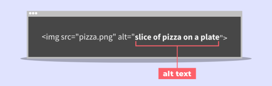
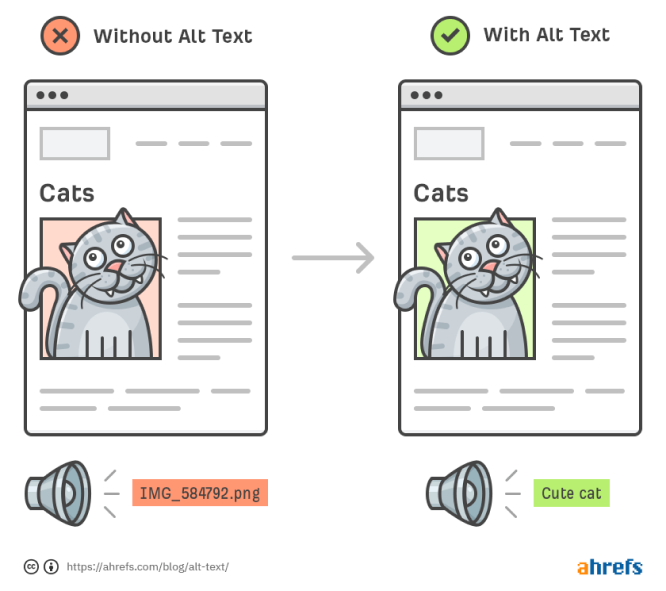

Todo o conteúdo não textual que é exibido ao usuário tem uma alternativa textual que serve a um propósito equivalente, exceto para as situações indicadas abaixo.
Se o conteúdo não textual for um controle ou aceitar a entrada de dados por parte do usuário, então esse conteúdo não textual possui um nome que descreve a sua finalidade. (Consultar o Critério de Sucesso 4.1.2 para requisitos adicionais de controles e conteúdo que aceitam entrada de dados por parte do usuário)
Se o conteúdo não textual consiste em mídia baseada em tempo, então as alternativas textuais fornecem, no mínimo, uma identificação descritiva do conteúdo não textual (Consulte a Diretriz 1.2 para obter os requisitos adicionais para mídia).
Se o conteúdo não textual for um teste ou um exercício, que ficaria inválido se fosse apresentado em texto, então as alternativas textuais fornecem, no mínimo, uma identificação descritiva do conteúdo não textual.
Se a finalidade do conteúdo não textual for, essencialmente, criar uma experiência sensorial específica, então as alternativas textuais fornecem, no mínimo, uma identificação descritiva do conteúdo não textual.
Se o conteúdo não textual for meramente decorativo, se for utilizado apenas para formatação visual, ou se não for exibido aos usuários, então esse conteúdo não textual deve ser implementado de uma forma que possa ser ignorado pelas tecnologias assistivas.
Se a finalidade do conteúdo não textual for confirmar que o conteúdo está sendo acessado por uma pessoa e não por um computador, então devem ser fornecidas alternativas textuais que identificam e descrevem a finalidade do conteúdo não textual. Formas alternativas de CAPTCHA, que utilizam modos de saída para diferentes tipos de percepção sensorial, devem ser apresentadas para atender diferentes deficiências.
A intenção deste Critério de Sucesso é tornar as informações de conteúdo não textual acessíveis por meio do uso de uma alternativa de texto, que podem ser apresentadas por meio de qualquer modalidade sensorial (por exemplo, visual, auditiva ou tátil) para atender às necessidades do usuário.
Fornecer alternativas de texto permite que a informação seja processada de várias maneiras por uma variedade de perfis de usuário. Por exemplo, uma pessoa que não consegue ver uma imagem pode ter a alternativa de texto lida em voz alta usando fala sintetizada. No futuro, as alternativas de texto também permitirão que as informações sejam mais facilmente traduzidas para a língua de sinais ou para uma forma mais simples da mesma língua.
O conteúdo não textual pode assumir várias formas, e este Critério de Sucesso especifica como cada uma deve ser tratada:
Para conteúdo não textual que não seja coberto por uma das outras situações listadas abaixo, como gráficos, diagramas, gravações de áudio, imagens e animações: Podem ser disponibilizadas as mesmas informações em um formato que pode ser renderizado por qualquer modalidade, como visual, auditivo ou tátil. Alternativas de texto curto e longo podem ser usadas conforme necessário para transmitir as informações no conteúdo não textual.
Para conteúdo não textual que seja um controle ou aceita entrada do usuário: Um nome é fornecido para descrever a finalidade do conteúdo não textual para que a pessoa saiba pelo menos do que se trata e por que ele está lá, para que os usuários saibam o que é e consigam decidir qual ação desejam realizar com ele. Portanto, é fornecida uma alternativa de texto que descreve a mídia baseada no tempo e/ou fornece seu título.
Para conteúdo somente de áudio ou vídeo ao vivo: Pode ser muito mais difícil fornecer alternativas de texto que forneçam informações equivalentes a conteúdo somente de áudio ou vídeo ao vivo. Nesses casos, as alternativas de texto fornecem um rótulo descritivo. Em alguns casos, testes precisam ser parcial ou totalmente apresentado em formato não textual, e são informações que não podem ser alteradas para texto porque a natureza do teste não permite. Por exemplo, um teste de audição seria inválido se uma alternativa de texto fosse fornecida. Para esses casos, alternativas de texto devem ser fornecidas para descrever a finalidade do conteúdo não textual, mas sem fornecer as informações necessárias para o teste.
Se o conteúdo destina-se a criar uma experiência sensorial específica: Nesses casos, onde as palavras não podem capturar totalmente a essência da mensagem, como obras de arte visual, etc. Para tal conteúdo, alternativas de texto pelo menos identificam o conteúdo não textual com um rótulo descritivo e, quando possível, texto descritivo adicional. Se o motivo da inclusão do conteúdo na página for conhecido e puder ser descrito, é útil incluir essa informação.
Recursos não textuais para provar que você é humano: É o caso do CAPTCHA. Estes geralmente envolvem tarefas visuais ou auditivas que estão além das capacidades atuais dos robôs da Web. No entanto, fornecer uma alternativa de texto para eles os tornaria operáveis por robôs, frustrando assim seu propósito. Neste caso, uma alternativa de texto descreveria a finalidade do CAPTCHA, e formas alternativas usando diferentes modalidades seriam fornecidas para atender às necessidades de pessoas com diferentes deficiências.
Conteúdo não textual que não se destina a ser visto ou compreendido pelo usuário: Imagens que não transmitem nenhuma informação e são usadas apenas para preencher espaço vazio, organizar o layout ou rastrear estatísticas, por exemplo. Colocar texto alternativo nesses itens pode distrair as pessoas que usam leitores de tela, mas não marcar o conteúdo, no entanto, deixa os usuários sem saber qual é o conteúdo não textual e quais informações podem ter perdido. Esse tipo de conteúdo não textual, portanto, é marcado ou implementado de forma que as tecnologias assistivas (TA) o ignorem e não apresentem nada ao usuário.
Este Critério de Sucesso ajuda as pessoas que têm dificuldade em perceber o conteúdo visual. A tecnologia assistiva pode ler o texto em voz alta, apresentá-lo visualmente ou convertê-lo em braille.
Textos alternativos podem ajudar algumas pessoas que têm dificuldade em entender o significado de fotografias, desenhos e outras imagens, como por exemplo, designs gráficos, pinturas, gráficos, tabelas, animações, etc.
Pessoas surdas, com deficiência auditiva ou que tenham problemas para entender as informações de áudio por qualquer motivo podem ler a apresentação do texto.
Pessoas surdocegas podem ler o texto em braile.
Além disso, as alternativas de texto suportam a capacidade de pesquisar conteúdo não textual e redefinir o propósito do conteúdo de várias maneiras.
Um gráfico de barras compara quantos widgets foram vendidos em junho, julho e agosto. O rótulo curto diz: "Figura um - Vendas em junho, julho e agosto". A descrição mais longa identifica o tipo de gráfico, fornece um resumo dos dados e as implicações comparáveis aos disponíveis no gráfico. Sempre que possível e prático, os dados reais são fornecidos em uma tabela.
O link para um clipe de áudio diz: "Discurso do presidente à assembléia". Um link para uma transcrição de texto é fornecido imediatamente após o link para o clipe de áudio.
Uma animação mostra como funciona o motor de um carro. Não há áudio e a animação faz parte de um tutorial que descreve o funcionamento de um motor. Como o texto do tutorial já traz uma explicação completa, a imagem é uma alternativa ao texto e a alternativa do texto inclui apenas uma breve descrição da animação e refere-se ao texto do tutorial para mais informações.
Um site da Web permite que os usuários selecionem entre uma variedade de câmeras da Web posicionadas em uma grande cidade. Depois que uma câmera é selecionada, a imagem é atualizada a cada dois minutos. Uma alternativa de texto curto identifica a câmera da Web como "câmera da Web de tráfego". O site também fornece uma tabela de tempos de viagem para cada uma das rotas cobertas pelas câmeras da Web. A tabela também é atualizada a cada dois minutos.
Uma fotografia de dois líderes mundiais apertando as mãos acompanha uma reportagem sobre uma reunião de cúpula internacional. A alternativa do texto diz: "O presidente X do país X aperta a mão do primeiro-ministro Y do país Y."
O link para um clipe de áudio diz: "Discurso do presidente à assembléia". Um link para uma transcrição de texto é fornecido imediatamente após o link para o clipe de áudio.
Uma página da Web inclui um link para uma gravação de áudio de uma coletiva de imprensa. O texto do link identifica a gravação de áudio. A página também contém um link para uma transcrição de texto da conferência de imprensa. A transcrição inclui um registro literal de tudo o que os palestrantes dizem. Ele identifica quem está falando, além de anotar outros sons significativos que fazem parte da gravação, como aplausos, risos, perguntas da plateia, etc.
Um aplicativo de e-learning usa efeitos sonoros para indicar se as respostas estão corretas ou não. O sinal sonoro indica que a resposta está correta e o som do bipe indica que a resposta está incorreta. Uma descrição de texto também está incluída para que as pessoas que não conseguem ouvir ou entender o som entendam se a resposta está correta ou incorreta.
Uma imagem em miniatura da primeira página de um link de jornal para a página inicial do "Smallville Times". A alternativa de texto diz "Smallville Times".
Diferentes alternativas para uma imagem do mundo: Uma imagem do mundo que é usada em um site de viagens como link para a seção Viagens Internacionais tem a alternativa de texto "Viagens Internacionais". A mesma imagem é usada como um link em um site da universidade com a alternativa de texto "Campus Internacionais".
Uma imagem da planta baixa de um edifício é interativa, permitindo que o usuário selecione uma determinada sala e navegue até uma página contendo informações sobre essa sala. A alternativa de texto curto descreve a imagem e sua finalidade interativa: "Planta baixa do edifício. Selecione uma sala para obter mais informações."
Cada item numerado nesta seção representa uma técnica ou combinação de técnicas que o Grupo de Trabalho WCAG considera suficiente para atender a este Critério de Sucesso. No entanto, não é necessário usar essas técnicas específicas. Para obter informações sobre o uso de outras técnicas, consulte Compreendendo as técnicas dos critérios de sucesso WCAG, particularmente a seção "Outras técnicas".
Selecione a situação abaixo que corresponde ao seu conteúdo. Cada situação inclui técnicas ou combinações de técnicas que são conhecidas e documentadas como sendo suficientes para aquela situação.
Situação A: Se uma breve descrição puder servir ao mesmo propósito e
apresentar as mesmas informações que o conteúdo não textual
G94: Fornecer uma alternativa de texto curto para conteúdo não
textual que atenda ao mesmo propósito e apresente as mesmas
informações que o conteúdo não textual usando uma das seguintes
técnicas alternativas.
Técnicas alternativas de texto curto para a Situação A:
ARIA6: Usando aria-label para fornecer rótulos para objetos
ARIA10: Usando aria-labelledby para fornecer uma alternativa de
texto para conteúdo não textual
G196: Usando uma alternativa de texto em um item dentro de um grupo
de imagens que descreve todos os itens do grupo
H2: Combinando imagens adjacentes e links de texto para o mesmo
recurso
H37: Usando atributos alt em elementos img
H53: Usando o corpo do elemento objeto
H86: Fornecer alternativas de texto para emojis, emoticons, arte
ASCII e leetspeak
PDF1: Aplicando alternativas de texto a imagens com a entrada Alt em
documentos PDF
Situação B: Se uma breve descrição não puder servir ao mesmo
propósito e apresentar as mesmas informações que o conteúdo não
textual (por exemplo, um gráfico ou diagrama)
G95: Fornecer alternativas de texto curto que forneçam uma breve
descrição do conteúdo não textual usando uma das seguintes técnicas
alternativas de texto curto para a Situação B E uma das seguintes
técnicas alternativas de texto longo para a Situação B:
Técnicas alternativas de texto curto para a Situação B:
ARIA6: Usando aria-label para fornecer rótulos para objetos
ARIA10: Usando aria-labelledby para fornecer uma alternativa de
texto para conteúdo não textual
G196: Usando uma alternativa de texto em um item dentro de um grupo
de imagens que descreve todos os itens do grupo
H2: Combinando imagens adjacentes e links de texto para o mesmo
recurso H37: Usando atributos alt em elementos img
H53: Usando o corpo do elemento objeto
H86: Fornecer alternativas de texto para emojis, emoticons, arte
ASCII e leetspeak
PDF1: Aplicando alternativas de texto a imagens com a entrada Alt em
documentos PDF
Técnicas alternativas de texto longo para a Situação B:
ARIA15: Usando aria-descriptoby para fornecer descrições de
imagens
G73: Fornecer uma descrição longa em outro local com um link
imediatamente adjacente ao conteúdo não textual
G74: Fornecimento de uma descrição longa em texto próximo ao
conteúdo não textual, com referência ao local da descrição longa na
descrição curta
G92: Fornecimento de descrição longa para conteúdo não textual que
serve ao mesmo propósito e apresenta as mesmas informações
H53: Usando o corpo do elemento objeto
As formas de se atingir os critérios de sucesso são diversas e variam de acordo com o contexto e as características do seu projeto. Para te ajudar durante o desenvolvimento das suas interfaces, selecione qual tipo de situação mais se adequa ao seu projeto.
Você poderá gerar uma documentação contendo todas as informações sobre as técnicas, de todos os critérios que você escolher implementar em suas telas, para te guiar com mais facilidade durante o andamento do projeto.
Para descrições que podem apresentar as mesmas informações que o conteúdo não textual e servir ao mesmo propósito.
Para descrições que podem apresentar as mesmas informações que o conteúdo não textual e servir ao mesmo propósito.
Para descrições que podem apresentar as mesmas informações que o conteúdo não textual e servir ao mesmo propósito.
A seguir estão erros comuns que são considerados falhas deste Critério de Sucesso pelo Grupo de Trabalho WCAG: F3: Falha no Critério de Sucesso 1.1.1 devido ao uso de CSS para incluir imagens que transmitem informações importantes F13: Falha no Critério de Sucesso 1.1.1 e 1.4.1 devido a ter uma alternativa de texto que não inclui informações transmitidas por diferenças de cores na imagem F20: Falha do Critério de Sucesso 1.1.1 e 4.1.2 devido à não atualização de alternativas de texto quando ocorrem alterações em conteúdo não textual F30: Falha do Critério de Sucesso 1.1.1 e 1.2.1 devido ao uso de alternativas de texto que não são alternativas (por exemplo, nomes de arquivo ou texto de espaço reservado) F38: Falha no Critério de Sucesso 1.1.1 devido à não marcação de imagens decorativas em HTML de forma a permitir que a tecnologia assistiva as ignore F39: Falha no Critério de Sucesso 1.1.1 devido ao fornecimento de uma alternativa de texto que não é nula (por exemplo, alt="espaço" ou alt="imagem") para imagens que devem ser ignoradas pela tecnologia assistiva F65: Falha no Critério de Sucesso 1.1.1 devido à omissão do atributo alt ou alternativa de texto em elementos img, elementos de área e elementos de entrada do tipo "imagem" F67: Falha no Critério de Sucesso 1.1.1 e 1.2.1 devido ao fornecimento de descrições longas para conteúdo não textual que não serve ao mesmo propósito ou não apresenta as mesmas informações F71: Falha no Critério de Sucesso 1.1.1 devido ao uso de textos semelhantes para representar o texto sem fornecer uma alternativa de texto F72: Falha no Critério de Sucesso 1.1.1 devido ao uso de arte ASCII sem fornecer uma alternativa de texto
Não é necessário usar essas Regras de Teste específicas para
verificar a conformidade com as WCAG, mas elas são métodos de teste
definidos e aprovados. As Regras de Teste são seguidas para
determinados aspectos deste Critério de Sucesso:
Elemento svg com papel explícito tem nome acessível não vazio
O botão de imagem tem um nome acessível não vazio
A
imagem tem um nome acessível não vazio
Para obter informações sobre como usar regras de teste, consulte
Noções básicas sobre regras de teste para critérios de sucesso WCAG.
Os recursos são apenas para fins informativos, sem endosso implícito: Trechos do NBA Tape Recording Manual, terceira edição Inacessibilidade do CAPTCHA All That Malarkey: Alternativas Acessíveis 456 Berea Street: os atributos Alt e Title Alt e acessibilidade Melhor conexão, melhores resultados: Alt Text